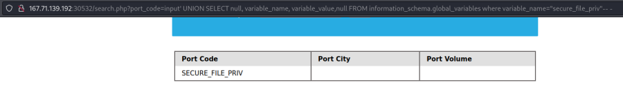

Privileges
• To Read Files we need:
◇ FILE privilege enabled for the DB user
• To Write Files
◇
FILE privilege enabled for the DB user
◇ MySQL global
secure_file_priv variable not enabled
◇ Write access to the location we want to write to on the back-end server
FILE PrivilegeFILE privilege allow to load a file's content into a table and then dump data from that table and read files
Most of the features that we will try to exploit rely on the
FILE privilege that "gives you permission to read and write files on the server host":
◇
Can be granted to any MySQL user, depending on the web application needs
◇
Always granted to the MySQL root user, both on *nix systems and MS Windows
▪ if an application connects to its database as root, exploiting a SQL injection will lead not only to data compromise, but also to full server takeover.
SELECT grantee, privilege_type FROM information_schema.user_privileges
input' UNION SELECT 1, grantee, privilege_type, 4 FROM information_schema.user_privileges-- -
We have
FILE privilege!
secure_file_priv
Variable (
https://mariadb.com/kb/en/server-system-variables/#secure_file_priv)
The
secure_file_priv variable is used to determine where to read/write files from.
◇ An
empty value → read/write files from the entire file system
▪ MariaDB has this variable set to empty by default, which lets us read/write to any file if the user has the
FILE privilege
◇ directory set → we can only read from the folder specified by the variable.
▪ MySQL (old configurations) uses /var/lib/mysql-files as the default folder. This means that reading files through a MySQL injection isn't possible with default settings
◇ NULL → cannot read/write from any directory
▪ MySQL (modern configurations) default to NULL, meaning that we cannot read/write files anywhere within the system
How retrieve
secure_file_priv value
• From mysql command line
SHOW VARIABLES LIKE 'secure_file_priv';
• Using UNION Injection
We need to get this vale through a SELECT statement.
Since Global Variables are stored in INFORMATION_SCHEMA database →
global_variables table → variable_name,variable_value
SELECT variable_name, variable_value FROM information_schema.global_variables where variable_name="secure_file_priv"
cn' UNION SELECT 1, variable_name, variable_value, 4 FROM information_schema.global_variables where variable_name="secure_file_priv"-- -
If we retrieve an
empty result means that we can read/write files to any location
